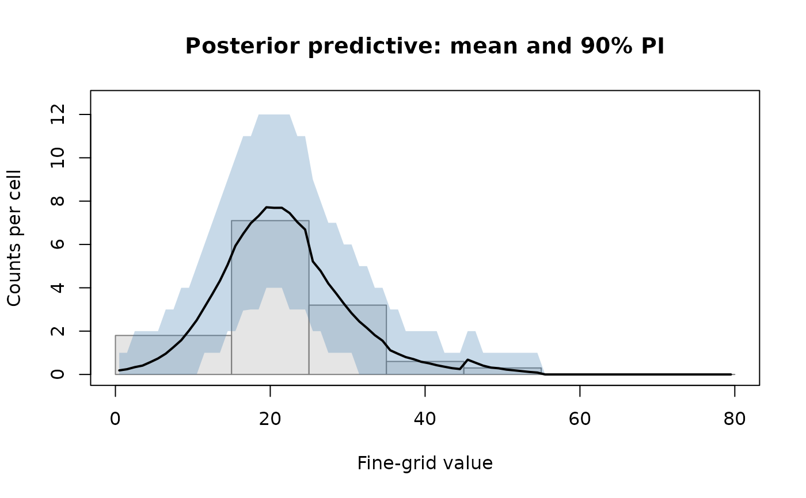

Posterior or parametric predictive distribution of fine-cell counts
posterior_predict.RdGenerates draws from the posterior or parametric predictive
distribution of the latent fine-cell (typically single-year) counts.
With type = "predictive" (default), within each wide bin
\(j\) the conditional distribution of the fine-cell counts given
the band total \(m_j\) is multinomial of size \(m_j\) with
within-band probabilities \(\pi_y / \gamma_j\). With
type = "rate" the function returns draws of the latent
smooth rate \(m_+ \pi\).
Arguments
- fit
A fitted
"pclm","pclm_exact"or"bpclm"object.- type
Either
"predictive"(the default) or"rate". See Details.- level
Credible/prediction level for the returned interval (default 0.9).
- n_draws
For frequentist input objects, the number of parametric multinomial draws to generate (default 2000). Ignored for
bpclminput.- seed
Optional integer for reproducibility.
- ...
Currently unused.
Value
An object of class "pclm_posterior_predict" – a list with
components draws, mean, median, lower,
upper, level, type, grid,
grid_mid, wide_breaks, m.
Details
Two distinct sources of uncertainty exist:
Rate uncertainty: epistemic uncertainty about the smooth underlying rate \(m_+ \pi\). Captured by the
bpclmposterior on \(\pi\); absent frompclm/pclm_exactpoint estimates.Predictive uncertainty: the multinomial sampling variability of the realised fine-cell counts within each wide bin, conditional on the band total.
For ungrouping use cases (band counts treated as data, fine-cell
counts as the unknown), type = "predictive" is usually the
right object, since it gives credible intervals that cover the
realised counts at the nominal level.
The wide-bin totals are reproduced exactly on every draw under
type = "predictive" (multinomial sampling within each band).
Under type = "rate" they are reproduced exactly only when
the input fit has been calibrated (see
calibrate) or is a pclm_exact fit.
Examples
# \donttest{
data(bloodlead)
fit <- bpclm(m = bloodlead$count,
wide_breaks = with(bloodlead, cbind(lower, upper)),
a = 0, b = 80, ngrid = 80, ndx = 17,
niter = 2000, burnin = 500, adapt = 300, seed = 1)
fit <- calibrate(fit)
pp <- posterior_predict(fit, type = "predictive")
plot(pp)

print(pp)
#> Posterior predictive (multinomial) draws over 80 fine cells
#> Number of draws: 1500 | level: 0.9
#> Wide bins: 7 | total counts: 139
#>
#> cell grid_mid mean lower upper
#> 1 0.5 0.19 0 1
#> 2 1.5 0.24 0 1
#> 3 2.5 0.34 0 2
#> 4 3.5 0.41 0 2
#> 5 4.5 0.57 0 2
#> 6 5.5 0.74 0 2
#> ... (74 more cells)
# }